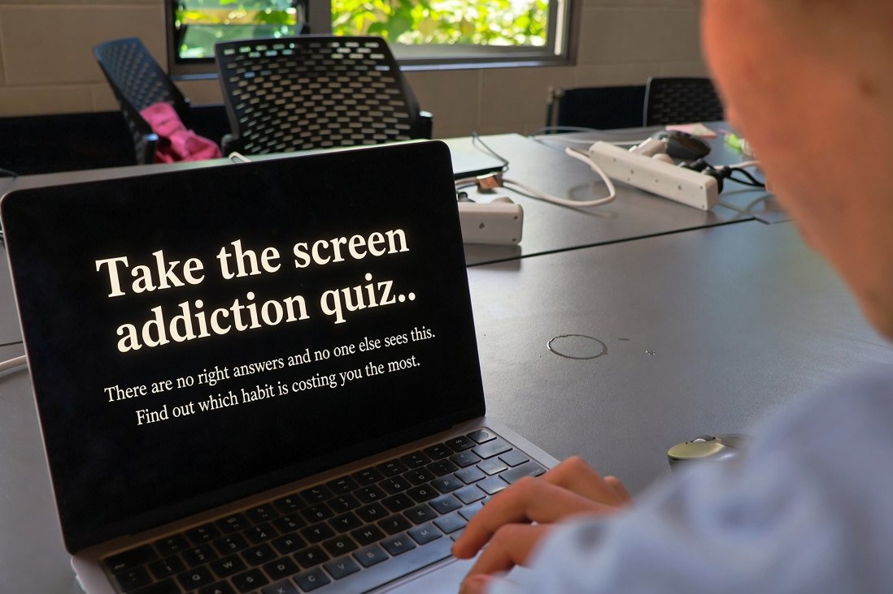

The Screen Habit Check

Start the quiz
Loading…
This check is a self-reflection tool built for a school project. It is not a clinical screening test and it does not diagnose anything. If you're worried about how you're feeling, talk to someone — Youthline 0800 376 633, or free text 234.